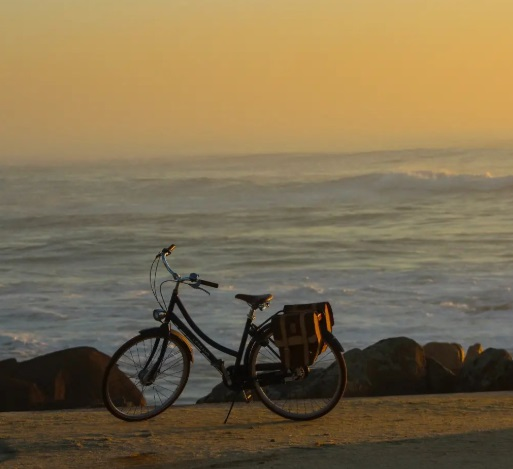
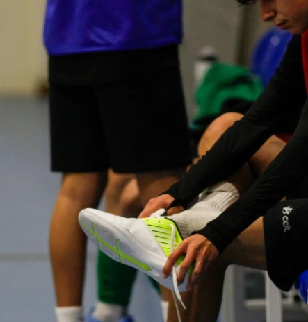
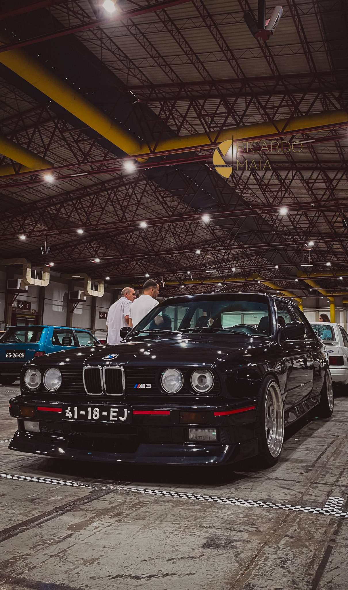

A fotografia é uma das minhas maiores paixões. Adoro capturar momentos, explorar paisagens e experimentar diferentes ângulos para contar histórias através das imagens. Recentemente, comecei a explorar fotografia noturna e paisagens urbanas.

Paisagem - Bicicleta
 Fotografia Urbana - Harley
Fotografia Urbana - Harley
 Fotografia Urbana - BMW
Fotografia Urbana - BMW
 Detalhe - Jante
Detalhe - Jante

Fotografia Urbana - Jota

Fotografia Urbana - M3
No meu Instagram partilho alguns dos meus melhores trabalhos.
Visite a minha página